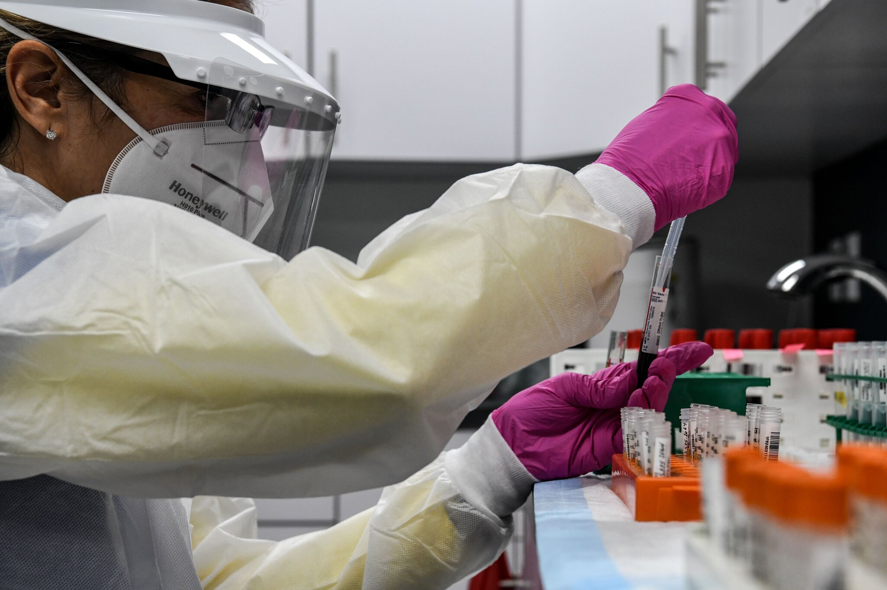

By Carl Zimmer
The United States may be within months of a profound turning point in the country’s fight against the coronavirus: the first working vaccine.
Demonstrating that a new vaccine was safe and effective in less than a year would shatter the record for speed, the result of seven-day work weeks for scientists and billions of dollars of investment by the government. Provided enough people can get one, the vaccine may slow a pandemic that has already killed a million people worldwide.
It’s tempting to look at the first vaccine as President Trump does: an on-off switch that will bring back life as we know it. “As soon as it’s given the go-ahead, we will get it out, defeat the virus,” he said at a September news conference . But vaccine experts say we should prepare instead for a perplexing, frustrating year.
The first vaccines may provide only moderate protection, low enough to make it prudent to keep wearing a mask. By next spring or summer, there may be several of these so-so vaccines, without a clear sense of how to choose from among them. Because of this array of options, makers of a superior vaccine in early stages of development may struggle to finish clinical testing. And some vaccines may be abruptly withdrawn from the market because they turn out not to be safe.
“It has not yet dawned on hardly anybody the amount of complexity and chaos and confusion that will happen in a few short months,” said Dr. Gregory Poland, the director of the Vaccine Research Group at the Mayo Clinic.
Some of this confusion is inevitable, but some is the result of how coronavirus vaccine trials were designed: Each company is running its own trial, comparing its jab with a placebo. But it didn’t have to be this way.
In the spring, when government scientists began discussing how to invest in vaccine research, some wanted to test a number of vaccines all at once, against each other — what’s known as a master protocol.
So far, AstraZeneca, Johnson & Johnson and Moderna have begun trials in the network. Novavax and Sanofi are expected to start their own Phase 3 studies in the next couple of months. But Pfizer, one of the front-runners, never joined the network, opting to run trials completely on its own.
If Pfizer’s results turn out well, many experts expect the company to ask the Food and Drug Administration for an emergency authorization of its vaccine, potentially for just one group of high-risk people. The company might then swiftly move to apply for a license, making it widely available.
 A technician sorted blood samples during a vaccination study this summer at the Research Centers of America.Credit...Chandan Khanna/Agence France-Presse — Getty ImagesBy spring or summer, there may well be several coronavirus vaccines for American consumers to choose from. But that choice will be tough. A vaccine that showed 50 percent efficacy in one trial, for example, might actually be more protective than one showing 60 percent efficacy in a different trial.
The only way to manage this chaotic year, Dr. Poland said, is for scientists to talk honestly about how vaccines are tested, and for people to learn what lies ahead. “As long as you frame something in advance, people do better with it,”.